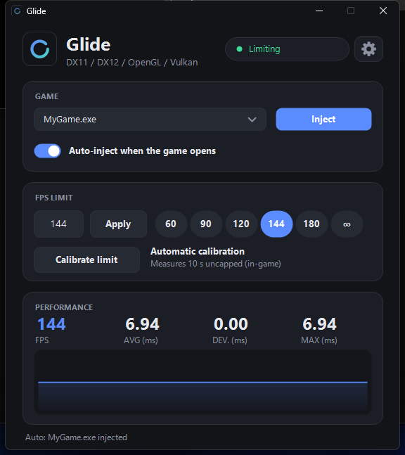
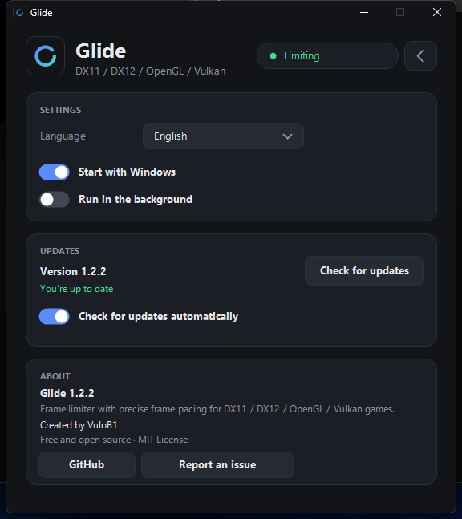

Ritmo de fotogramas preciso
Cada plazo es el anterior más el intervalo, así que no hay deriva acumulada. Espera con un temporizador de alta resolución y termina con una espera activa corta para precisión por debajo del milisegundo.
Para Windows 10/11 · Gratis · Licencia MIT
Un limitador de FPS con ritmo de fotogramas preciso para juegos DX11, DX12, OpenGL y Vulkan en Windows. Pensado para monitores de alta frecuencia.
Instalador por usuario, sin permisos de administrador · versión {version}

Por qué
Un tope normal solo controla el promedio. Si los fotogramas llegan en momentos desiguales, el juego sigue sintiéndose a tirones. Glide se engancha a la llamada de presentación de la API gráfica del juego (Present de DXGI, SwapBuffers de OpenGL o vkQueuePresentKHR de Vulkan) y libera cada fotograma en un plazo exacto, así el tiempo entre fotogramas se mantiene plano. En las pruebas, la desviación del tiempo de fotograma ronda los 0,01 ms.
Funciones
Cada plazo es el anterior más el intervalo, así que no hay deriva acumulada. Espera con un temporizador de alta resolución y termina con una espera activa corta para precisión por debajo del milisegundo.
Funciona con DirectX, con OpenGL (por ejemplo Minecraft Java Edition) y con Vulkan, sin necesitar el SDK de Vulkan. Si una pila presenta por dos APIs a la vez (DXVK), solo limita una.
Eliges el juego en una lista limpia de procesos con ventana (sin lanzadores ni navegadores). Cada juego guarda su propio límite y sus ajustes, y la inyección automática lo engancha la próxima vez que se abra.
Pulsa Calibrar: Glide ejecuta el juego sin límite durante 10 segundos, mide tus tiempos reales y sugiere un límite que tu equipo pueda sostener.
FPS, promedio, desviación y tiempo máximo de fotograma, enviados directamente desde el juego.
Arranque opcional con Windows, y al cerrar la ventana puede quedarse en la bandeja para que la inyección automática siga funcionando. Casi 0 % de CPU y unos 3 MB minimizado.
English, Español, Português, 日本語, 中文 y 한국어. Usa el idioma de Windows y se puede cambiar en el programa.
Comprueba la última versión una vez al día (se puede apagar) y se actualiza con un clic. Solo ejecuta el instalador si su SHA-256 coincide con el que publica GitHub.
Licencia MIT, sin dependencias de terceros. Instalación por usuario, con accesos directos y desinstalación limpia.

Protección anti-cheat
Glide inyecta una DLL en el juego, y los sistemas anti-cheat pueden tratarlo como trampa. Para proteger tu cuenta, se niega a engancharse a juegos que usan anti-cheat, tanto en modo manual como automático.
Más de 70 títulos y lanzadores conocidos (Valorant, Overwatch, Fortnite, Apex Legends, CS2, Rainbow Six Siege, Escape from Tarkov, Genshin Impact, Call of Duty, GTA V Online, Rust y más).
Antes de inyectar revisa si el proceso carga módulos anti-cheat (Easy Anti-Cheat, BattlEye, Vanguard, GameGuard, XIGNCODE3, FACEIT, Ricochet y otros) y se detiene si encuentra alguno.
Los juegos bloqueados se ven atenuados con la etiqueta roja BLOCKED y no se pueden elegir. Puedes añadir cualquier exe a la sección [block] de glide.ini.
La lista y el análisis son una red de seguridad, no una garantía: el anti-cheat cambia a menudo y algunos juegos lo cargan tarde. Úsalo solo en juegos sin anti-cheat, como los de un jugador o los independientes. Eres responsable de dónde lo usas.
Instalar
Descarga glide-setup.exe de la última versión y ejecútalo.
Abre Glide y arranca tu juego.
Elige el juego en la lista y pulsa Inyectar (o activa la inyección automática).
Pon un límite, o pulsa Calibrar para que te sugiera uno. Una buena regla es unos FPS por debajo de la frecuencia de tu monitor.
El instalador no está firmado: Windows SmartScreen o tu antivirus pueden avisar. El código completo está en GitHub y puedes compilarlo tú. Una DLL inyectada en un juego en marcha sigue cargada: tras actualizar Glide, reinicia el juego.
Detalles técnicos
glide.dll con CreateRemoteThread + LoadLibraryW.Present y Present1).SwapBuffers / wglSwapBuffers y las vuelve a revisar según el juego carga bibliotecas (necesario para Java/LWJGL).vkQueuePresentKHR se parchea en línea con un salto atómico de 5 bytes a un trampolín cercano.vkcube del SDK de Vulkan. Vulkan en juegos reales tiene menos pruebas: avisa si encuentras fallos.build.bat genera glide.dll, glide-ui.exe y glide-setup.exe. Sin dependencias de terceros.Dudas
Muchos solo controlan el promedio. Glide libera cada fotograma en un plazo exacto, así el tiempo entre fotogramas es plano y el movimiento se siente más fluido.
No lo uses en juegos con anti-cheat: inyecta una DLL y puede contar como trampa. Glide se niega a engancharse a los que reconoce, pero no es una garantía.
Nada: es gratis y de código abierto (MIT).
El instalador aún no tiene un certificado de firma de código. El código está en GitHub y puedes compilarlo tú.
No: es para Windows 10 y 11 de 64 bits.